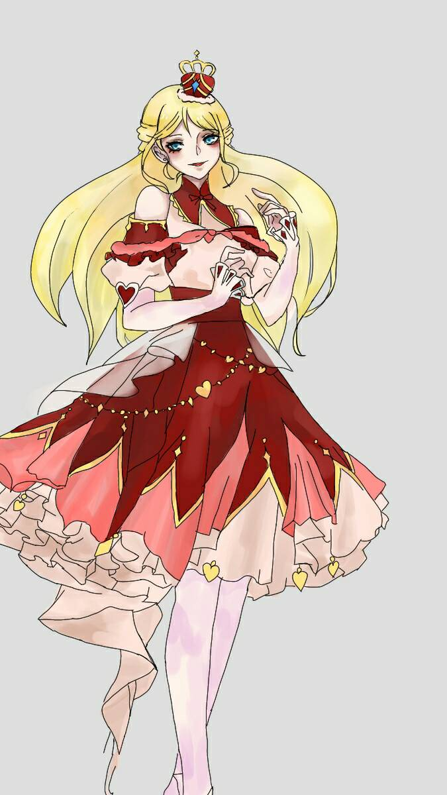

女皇 The Empress
元素土
對應牌17星星
對應星座金星
牌義皇后是純粹化育萬物的母性力量，她是人間豐富感官和物質的來源，她頭上七片花辦是像徵大自然以7為一周期的循環，後面的大自然和山林，象徵自然的豐沃，她的袖子上有金星的符號，暗示她與占星學中的金星習習相關，身前的水池象徵男女結合產生命。她臉上優雅的神情是在宣告受到天地恩寵的福澤，而此顯化在物質世界的豐饒里，皇后象徵“感官美”。
關鍵語化育、奉獻、治療、慈悲、智慧★暗示以務實的態度付出的最佳時候
牌正面依靠創造力和豐富的直覺實現計劃，成為具體的成果。
牌反面在關係中遭遇困難，無法付出努力，無法實現計劃。
說到皇后牌，一般我都會請學生想像一個做事面面俱到溫柔漂亮的母親，皇后牌是能夠寵愛孩子的同時又不虧待自己的母親，同時很有可能在事業方面又很成功，而她的成功不僅僅是因為她的工作能力，
皇后牌是3號牌，3代表著合作、交流、群體（如：聖杯3、錢幣3），所以她有一定的社交能力與管理能力，才能在職場上如魚得水，
仔細觀察我們生活當中有不少如『皇后』的角色，像是：有人脈的女性貴人、職場上喜愛照顧人的女上司、親切熱情的鄰居街坊、自己的母親等，他們都是溫暖的、樂意分享或付出的，
但他們的生活重心卻也不是完全投入在他人身上，他們也注重自己的形象、外表（穿衣品味、體態身形），以及生活上的感官享受（視覺，聽覺，嗅覺，味覺，觸覺），
若是抽到逆位的皇后牌，原本喜愛享受的生活，就會變成揮霍無度的奢侈生活了。
以單張牌來解釋，在工作方面：工作進入收成期，之前付出的努力會有不錯的回收。
與同事交流愉快，彼此關係和諧。在感情方面：對愛情熱情主動，也有女追男的可能。
兩人彼此有很深的吸引力，喜歡與伴侶一起享樂的感覺。在生活方面：購物欲望強，喜愛購買美的東西（奢侈品、保養品等），喜好藝術品（參觀展覽），喜歡接近大自然（野餐活動）。
離開卡牌